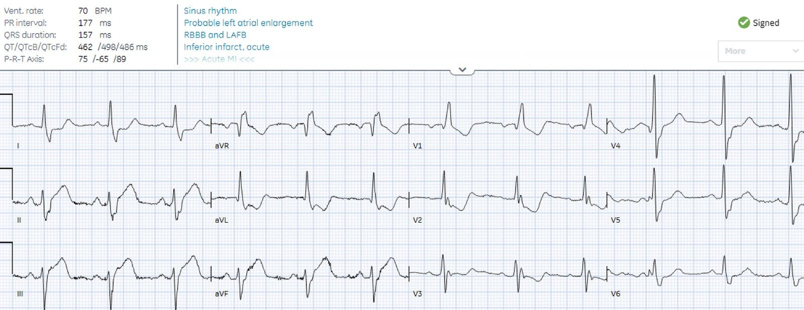
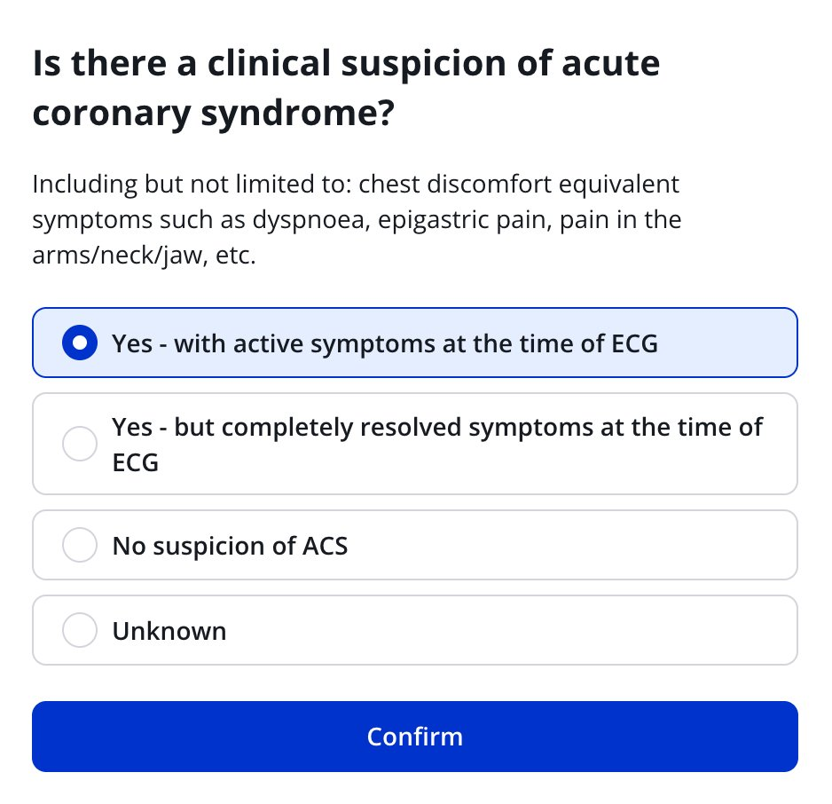
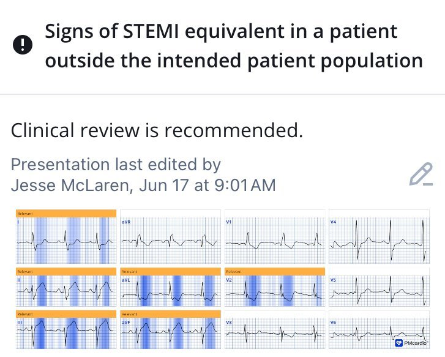
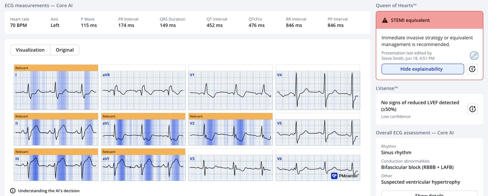
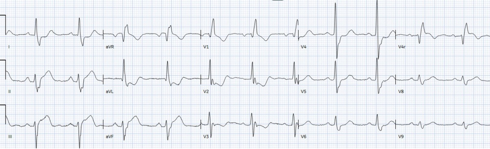
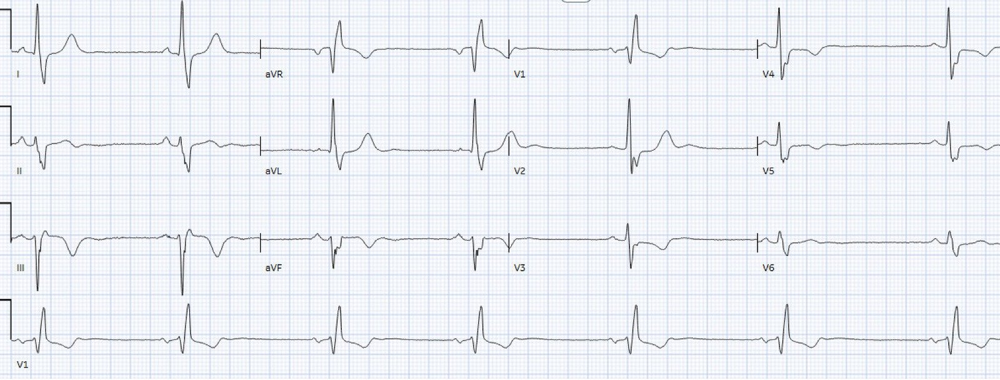
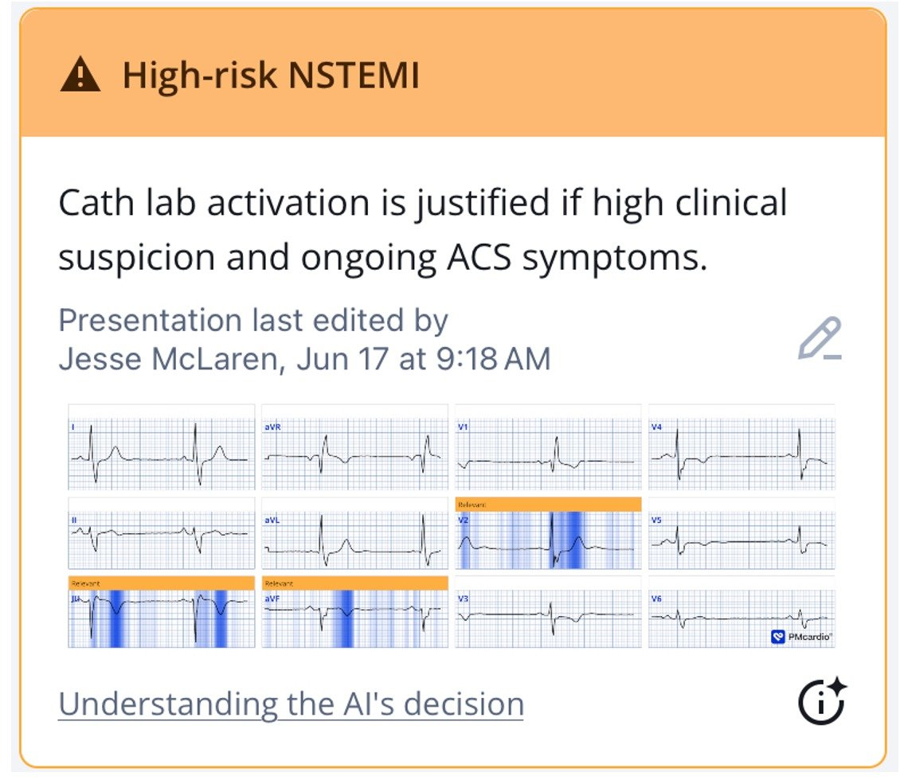
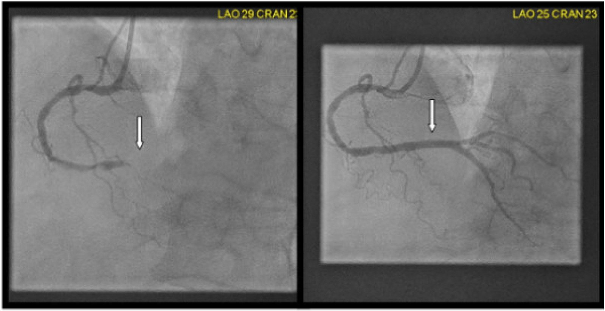
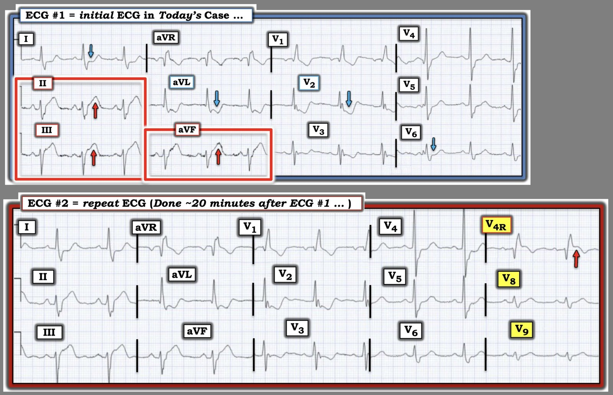

26/06/2026 — Nam 65 tuổi đau bụng cấp: không đau ngực có loại trừ được STEMI/OMI không?
Bản dịch tiếng Việt của bài "65 year old with acute abdominal pain: does lack of chest pain exclude STEMI/OMI?" – Dr. Smith’s ECG Blog. Giữ nguyên toàn bộ 9 hình ảnh của bản gốc.


Tác giả: Jesse McLaren
Một bệnh nhân nam 65 tuổi, trước đây khỏe mạnh, đến viện vì đau bụng vùng giữa đột ngột, dữ dội, không lan, kéo dài một giờ, kèm buồn nôn và vã mồ hôi. Huyết áp 190/100, tần số tim 60, nhịp thở và độ bão hòa oxy bình thường.
Kết quả đọc điện tâm đồ cuối cùng của bác sĩ tim mạch được làm mù (không biết bệnh cảnh) là nhồi máu cơ tim cấp thành dưới, nhưng bệnh nhân không hề đau ngực. Bạn nghĩ sao?

Bạn nghĩ sao?
Nhịp xoang bình thường, RBBB và LAFB, điện thế bình thường. Có ST chênh lên ở các chuyển đạo dưới, đạt tiêu chuẩn STEMI, kèm sóng T tối cấp với ST chênh xuống và sóng T đảo ngược soi gương (reciprocal) ở aVL (OMI thành dưới), và STD/TWI bất tương hợp quá mức ở V2 (OMI thành sau). RBBB/LAFB có thể là biến chứng cấp của tắc đoạn gần LAD, nhưng OMI dưới-sau thường do tắc RCA, vốn không ảnh hưởng tới nhánh phải hay các phân nhánh trái. (Smith: nhiều khả năng RBBB/LAFB đã có từ trước)
Như vậy, điện tâm đồ này được đọc mù là STEMI thành dưới. Queen of Hearts cũng đọc điện tâm đồ mà không biết bệnh cảnh lâm sàng, nhưng trước hết hỏi xem bệnh nhân đang có triệu chứng ACS, triệu chứng ACS đã hết, hay không có nghi ngờ ACS.
Đây là cách Queen đặt câu hỏi này:


Nếu bạn trả lời Queen rằng không có nghi ngờ ACS, Queen vẫn đánh dấu những thay đổi có giá trị chẩn đoán OMI dưới-sau (không cần chuyển đạo phía sau), nhưng lưu ý cần diễn giải trong bối cảnh lâm sàng.


Queen of Hearts thấy CẢ OMI thành dưới lẫn OMI thành sau (STEMI hoặc tương đương STEMI).
_______
Smith: Bất kỳ ai đau bụng kèm vã mồ hôi đều phải được nghi ngờ ACS, điều mà Jesse giải thích chi tiết dưới đây. Hãy để ý Queen hỏi: “Bao gồm nhưng không giới hạn ở: các triệu chứng tương đương khó chịu ở ngực như khó thở, đau thượng vị, đau tay/cổ/hàm, v.v.” Dù nhồi máu cơ tim cấp có thể diễn ra thầm lặng, ca này KHÔNG thầm lặng. Bệnh nhân này có triệu chứng.
Đây là một ca nhồi máu cơ tim cấp thực sự thầm lặng.
Và một ca khác: Should Troponin be a Vital Sign? Perhaps, but only if Interpreted Using Pre-test Probability.
Đây là kết quả đọc của Queen nếu bạn trả lời có về triệu chứng:


Ca bệnh tiếp diễn:
Bác sĩ cấp cứu nhận thấy ST chênh lên ở các chuyển đạo dưới và thay đổi soi gương ở aVL trên điện tâm đồ. Khám thấy bụng mềm, ấn đau trên rốn, không có phản ứng thành bụng, và siêu âm tại giường (POCUS) không thấy phình động mạch chủ bụng (AAA) hay viêm túi mật để giải thích cơn đau. Bệnh nhân được dùng thuốc giảm đau (để kiểm soát triệu chứng, không phải như một công cụ chẩn đoán) và điện tâm đồ 15 chuyển đạo được ghi 20 phút sau bản đầu tiên:


Vẫn còn OMI dưới-sau (với chuyển đạo phía sau âm tính giả), cùng với ST chênh lên ở V4R (Smith: điều này gần như chẩn đoán chắc chắn nhồi máu thất phải do tắc đoạn gần RCA. Điều này càng phải làm bạn nghi ngờ nhiều hơn). Vì vậy bệnh nhân được xịt nitro và mời hội chẩn tim mạch khẩn vì có thể là STEMI dù không đau ngực.
Bác sĩ tim mạch cho rằng bệnh sử không phù hợp với STEMI. Họ ghi nhận đau và ấn đau thượng vị, POCUS không kết luận được về rối loạn vận động thành (Smith: POCUS không nhạy với rối loạn vận động thành, nhất là khi không dùng chất cản âm dạng bọt khí), và troponin I độ nhạy cao ban đầu là 8ng/L, bình thường (<16 ở nữ và <26). Vì vậy bệnh nhân được chụp CT ngực/bụng/chậu để tìm bóc tách động mạch chủ hoặc nguyên nhân tại bụng, và kết quả bình thường. Troponin đo lặp lại trong vài giờ sau đó là 16 (vẫn bình thường) rồi 180 ng/L. Bệnh nhân vẫn đau thượng vị kéo dài và xuất hiện nhịp chậm, kèm thay đổi trên điện tâm đồ:


Có nhịp chậm xoang, các thay đổi đoạn ST đã hết và sóng T tối cấp đã xẹp xuống và đảo ngược (với sóng T cao soi gương ở V2). Điều này gợi ý tái tưới máu, nhưng bệnh nhân vẫn còn đau thượng vị. Queen đánh dấu các thay đổi tái tưới máu trên điện tâm đồ, nhưng khuyên kích hoạt phòng thông tim nếu nghi ngờ lâm sàng cao và vẫn còn triệu chứng ACS:


Với đau thượng vị kéo dài, thay đổi điện tâm đồ động (dynamic) và nhịp chậm thoáng qua, cùng troponin tăng dần trong khi các nguyên nhân khác đã được loại trừ, phòng thông tim được kích hoạt. Thời gian từ cửa đến thông tim là 6 giờ và chụp mạch cho thấy tắc 100% đoạn giữa RCA. Dưới đây là hình chụp mạch trước và sau đặt stent:


EF giảm còn 44% với vô động thành dưới và giảm động thành dưới-bên từ đáy đến đoạn xa, và có troponin đỉnh cực cao 100,000 ng/L (một thước đo tốt cho thấy ổ nhồi máu rất lớn).
ACS ≠ Đau ngực cấp + STE
ACS từ lâu bị đánh đồng với đau ngực cấp + ST chênh lên. Nhưng 1) phần lớn bệnh nhân đau ngực ở khoa cấp cứu không bị ACS, 2) nhiều trường hợp nhồi máu cơ tim cấp biểu hiện không kèm đau ngực, 3) phần lớn bệnh nhân đau ngực có STE ở khoa cấp cứu không bị nhồi máu cơ tim, và 4) phần lớn OMI biểu hiện không có STE.
- Một nghiên cứu quốc gia mới tại Mỹ trên bệnh nhân khoa cấp cứu có lý do vào viện chính là đau ngực không do chấn thương cho thấy 5.5% (và 9.4% ở người >64 tuổi) được chẩn đoán một trong 7 tình trạng đe dọa tính mạng (ACS, PE, tràn khí màng phổi, bóc tách động mạch chủ, hội chứng Boerhaave, chèn ép tim, vỡ phình động mạch chủ bụng). Chẩn đoán thường gặp nhất là ACS với 4.5% (so với 0.09% của bóc tách động mạch chủ). Nhưng phần lớn các chẩn đoán này biểu hiện không có đau ngực là lý do vào viện chính, kể cả ACS (47%). Như vậy, khả năng ACS trước xét nghiệm nói chung ở bệnh nhân đau ngực tại khoa cấp cứu là thấp, nhưng không đau ngực không loại trừ ACS. Do chỉ tập trung vào lý do vào viện chính, nghiên cứu này có lẽ đã đánh giá thấp tần suất đau ngực, ví dụ những bệnh nhân vào viện chủ yếu vì khó thở hoặc đau thượng vị mà khi hỏi bệnh sử kỹ hơn thì cũng có đau ngực. Đau/tức ngực là triệu chứng ACS điển hình, nhưng các triệu chứng tương đương cơn đau thắt ngực như khó thở hay đau thượng vị cũng vậy, và không đau ngực không loại trừ ACS cũng không dự báo một diễn tiến lành tính hơn.
- Ngược lại, ACS không kèm đau ngực là một yếu tố tiên lượng xấu. Các nghiên cứu đã nhất quán cho thấy ACS không đau ngực là một kiểu biểu hiện thường gặp, nhất là ở người lớn tuổi, nữ giới và người có bệnh đồng mắc, và nó dẫn tới chậm chẩn đoán/điều trị và tỷ lệ tử vong cao hơn. [như ở đây (Brieger và cs.), ở đây (El Menyar và cs.), ở đây (Bjork và cs.) và ở đây (Pong và cs.)]
- Xem tài liệu tham khảo bên dưới.
- Canto và cs. đã công bố nghiên cứu rất lớn này trên JAMA năm 2000 và nhận thấy 1/3 số STEMI và 1/3 số NSTEMI biểu hiện không kèm đau ngực.
Canto JG, Shlipak MG, Roger WJ. Prevalence, clinical characteristics, and mortality among patients with myocardial infarction presenting without chest pain. Tạp chí JAMA, năm 2000;283(24):3223–9.- Kết quả Trong 434,877 bệnh nhân từ 1674 bệnh viện được chẩn đoán nhồi máu cơ tim, 142,445 người (33%) không đau ngực khi đến viện. Nhóm bệnh nhân nhồi máu cơ tim này trung bình lớn hơn 7 tuổi so với nhóm có đau ngực (74.2 so với 66.9 tuổi), với tỷ lệ nữ giới (49.0% so với 38.0%) và bệnh nhân đái tháo đường (32.6% so với 25.4%) hoặc có tiền sử suy tim (26.4% so với 12.3%) cao hơn. Ngoài ra, bệnh nhân nhồi máu cơ tim không đau ngực đến viện muộn hơn (trung bình 7.9 so với 5.3 giờ), ít được chẩn đoán xác định nhồi máu cơ tim lúc nhập viện hơn (22.2% so với 50.3%), và ít được điều trị tiêu sợi huyết hoặc nong mạch tiên phát hơn (25.3% so với 74.0%), cũng như ít được dùng aspirin (60.4% so với 84.5%), thuốc chẹn β (28.0% so với 48.0%) hay heparin (53.4% so với 83.2%) hơn. Bệnh nhân nhồi máu cơ tim không đau ngực có tỷ lệ tử vong trong viện 23.3% so với 9.3% ở bệnh nhân có đau ngực (tỷ số chênh hiệu chỉnh cho tử vong 2.21 [khoảng tin cậy 95%, 2.17-2.26]).
- Điều này càng trầm trọng hơn do độ nhạy và độ đặc hiệu kém của ST chênh lên đối với tắc mạch vành cấp. Phần lớn bệnh nhân ST chênh lên ở khoa cấp cứu không bị nhồi máu cơ tim, mà có STE thứ phát do LBBB/LVH hoặc tương xứng với điện thế cao trong biến thể bình thường/tái cực sớm. Những trường hợp này dẫn tới kích hoạt dương tính giả.
- Và phần lớn bệnh nhân nhồi máu cơ tim do tắc biểu hiện không đạt tiêu chuẩn STEMI, dẫn tới chậm tái tưới máu và tỷ lệ tử vong cao hơn (được chứng minh ở đây và ở đây). QOH có thể nhận ra cả STEMI dương tính giả lẫn các trường hợp tắc tinh tế.
- Đau thượng vị không kèm đau ngực là triệu chứng khởi phát ở tới 11% nhồi máu cơ tim thành trước và 16% nhồi máu cơ tim thành dưới trong nghiên cứu này của Culic và cs.
Vì vậy cần một cách tiếp cận Bayes đối với OMI (mô tả ở đây và kèm các ca bệnh ở đây): khả năng trước xét nghiệm (bao gồm các triệu chứng tương đương cơn đau thắt ngực, thiếu máu cục bộ kháng trị và bất ổn điện học) + xét nghiệm (dấu hiệu OMI trên điện tâm đồ, POCUS tìm rối loạn vận động thành khu trú, +/- troponin), định hướng xử trí sau xét nghiệm.
Khi khả năng trước xét nghiệm cao, các dấu hiệu OMI tinh tế trên điện tâm đồ có thể giúp đẩy nhanh việc chụp mạch. Khi khả năng trước xét nghiệm rất cao (ví dụ thiếu máu cục bộ kháng trị kèm bất ổn huyết động và rối loạn vận động thành khu trú), không cần đến điện tâm đồ. Trong ca này, xét nghiệm cho thấy STEMI rõ ràng, nhưng khả năng trước xét nghiệm lại bị đánh giá là quá thấp vì không có đau ngực, được củng cố thêm bởi khám thực thể và xét nghiệm troponin ban đầu. Nhưng không đau ngực là thường gặp trong nhồi máu cơ tim, ấn đau tái hiện được cũng thường gặp ở bệnh nhân nhồi máu cơ tim, và troponin chỉ sau một giờ có triệu chứng thì không có ích. Dù khả năng ACS trước xét nghiệm nói chung ở khoa cấp cứu là thấp, không đau ngực không loại trừ được ACS, và một điện tâm đồ STEMI(+)OMI làm tăng mạnh khả năng OMI sau xét nghiệm. Bóc tách động mạch chủ có khả năng trước xét nghiệm thấp hơn nhiều, và nếu có STEMI trên điện tâm đồ, khả năng đó là thứ phát do bóc tách động mạch chủ chỉ là 0.5%. Khi không có dấu hiệu bóc tách trên POCUS, chụp CT sẽ làm chậm tái tưới máu cho OMI trong đại đa số trường hợp.
May mắn là cuối cùng phòng thông tim cũng được kích hoạt dù ST chênh lên đã hết, dựa trên các dấu hiệu lâm sàng của OMI (thiếu máu cục bộ kháng trị và nhịp chậm thoáng qua) và troponin tăng dần.
Điều cần nhớ
- Không đau ngực không loại trừ STEMI/nhồi máu cơ tim do tắc, và ACS không kèm đau ngực liên quan với chậm điều trị và tử vong cao hơn.
- Troponin đầu tiên sau một giờ có triệu chứng không có ích, và mức tăng troponin ban đầu không dự báo được giá trị đỉnh.
- STEMI thứ phát do bóc tách động mạch chủ rất hiếm.
- Tái tưới máu đòi hỏi hết cả triệu chứng lẫn thay đổi trên điện tâm đồ.
- Queen of Hearts có thể nhận ra tình trạng tắc và tái tưới máu, cả hai đều cần đối chiếu lâm sàng.
Ngay cả khi một điện tâm đồ VỪA có giá trị chẩn đoán OMI VỪA đạt tiêu chuẩn STEMI, bệnh nhân vẫn thường bị chăm sóc cẩu thả. Đây là sai sót nghề nghiệp.
Tài liệu tham khảo chọn lọc:
Brieger D, Eagle KA, Goodman SG, và cs. Acute coronary syndromes without chest pain, an underdiagnosed and undertreated high-risk group: insights from the Global Registry of Acute Coronary Events. Tạp chí Chest [Internet], năm 2004;126(2):461–9. Truy cập tại: http://dx.doi.org/10.1378/chest.126.2.461
El-Menyar A, Zubaid M, Sulaiman K, và cs. Atypical presentation of acute coronary syndrome: a significant independent predictor of in-hospital mortality. Tạp chí J Cardiol [Internet], năm 2011;57(2):165–71. Truy cập tại: http://dx.doi.org/10.1016/j.jjcc.2010.11.008
Björck L, Nielsen S, Jernberg T, Zverkova-Sandström T, Giang KW, Rosengren A. Absence of chest pain and long-term mortality in patients with acute myocardial infarction. Tạp chí Open Heart [Internet], năm 2018;5(2):e000909. Truy cập tại: http://dx.doi.org/10.1136/openhrt-2018-000909
Pong JZ, Ho AFW, Tan TXZ, và cs. ST-segment elevation myocardial infarction with non-chest pain presentation at the Emergency Department: Insights from the Singapore Myocardial Infarction Registry. Tạp chí Intern Emerg Med [Internet], năm 2019;14(6):989–97. Truy cập tại: http://dx.doi.org/10.1007/s11739-019-02122-3
= = =
==================================
BÌNH LUẬN CỦA TÔI, bởi KEN GRAUER, MD (26/6/2026):
Trong tiêu đề bài hôm nay, Dr. McLaren đặt câu hỏi: “Không có CP (đau ngực – Chest Pain) có loại trừ được STEMI/OMI không?”. Câu trả lời là KHÔNG, dứt khoát như vậy!
- SỰ THẬT #1: Dù CP cho đến nay là triệu chứng thường gặp nhất của nhồi máu cơ tim cấp — các biểu hiện không điển hình (tức là đau hoặc khó chịu ở các vùng khác của cơ thể) cũng như nhồi máu cơ tim cấp không kèm CP hay bất kỳ triệu chứng nào khác, vẫn tiếp tục xảy ra thường hơn nhiều so với người ta thường nghĩ (Khan và cs.: Cureus 15(2):e35492, 2023 — và — Björck và cs.: Open Heart 5:e000909, 2018).
- SỰ THẬT #2: Như Dr. McLaren đã nêu (và như chúng tôi đã nhiều lần cho thấy trong các ca bệnh trình bày trên Dr. Smith’s ECG Blog) — Troponin ban đầu (và đôi khi cả Troponin lần 2) có thể âm tính dù đang có nhồi máu cấp tiến triển.
- Thực tế lâm sàng: Chừng nào 2 sự thật trên chưa được những người làm công tác cấp cứu chấp nhận (kể cả bác sĩ tim mạch trong ca hôm nay, người đã không chịu chấp nhận những sự thật này) — thì các OMI cấp, và thậm chí cả STEMI, sẽ tiếp tục bị bỏ sót, gây hại cho việc chăm sóc bệnh nhân.
= = =
2 điện tâm đồ đầu tiên …
Thực thể mà chúng tôi gọi là “Giả” rõ ràng có tồn tại (trong đó điện tâm đồ có thể trông giống nhồi máu cấp — nhưng hóa ra không phải nhồi máu). Dù vậy — bài học khó khăn mà hy vọng chúng ta rút ra được từ ca hôm nay là ngay cả khi Troponin ban đầu bình thường và bệnh nhân không có CP — NẾU điện tâm đồ ban đầu “trông giống” nhồi máu cơ tim cấp, thì điện tâm đồ này phải được tin cho đến khi chứng minh được điều ngược lại.
- Để rõ ràng, trong Hình 1 — tôi đã đặt lại và đánh dấu 2 điện tâm đồ đầu tiên của ca hôm nay.
- ĐIỂM THEN CHỐT (PEARL): Đặt 2 bản ghi đầu tiên này cạnh nhau trong cùng một hình giúp dễ nhận ra các thay đổi ST-T “động” (dynamic) tinh tế-nhưng-có-thật.
= = =
Hãy XEM lại một lần nữa …
- BẠN có thấy những thay đổi động tinh tế này trong Hình 1 không?
= = =
Hình 1: Tôi đã đánh dấu 2 điện tâm đồ đầu tiên của ca hôm nay.


= = =
Trả lời: Các điện tâm đồ trong Hình 1 ….
Điện tâm đồ ban đầu của ca hôm nay cho thấy nhịp xoang với nhiều bất thường mà xét cho cùng trông y hệt một STEMI cấp cho đến khi chứng minh được điều ngược lại (Bằng chứng là bác sĩ tim mạch đọc mù đã kết luận “nhồi máu cơ tim cấp thành dưới”). Như Dr. McLaren đã nêu — Trong số các bất thường trên điện tâm đồ #1 có những điểm sau:
- Blốc hai phân nhánh (RBBB/LAHB) không rõ thời điểm xuất hiện (tức là Không có điện tâm đồ cũ — chúng ta không biết rối loạn dẫn truyền này mới hay cũ).
- ST-T tối cấp ở từng chuyển đạo dưới (các mũi tên ĐỎ đánh dấu sóng T cao hơn và “béo” hơn với đỉnh nhọn, đoạn ST thẳng đuỗn, điểm J chênh lên ≥2 mm, và đáy sóng T rộng hơn nhiều so với dự kiến ở các chuyển đạo II,III,aVF).
- ST-T chênh xuống soi gương rõ rệt ở cả chuyển đạo aVL và chuyển đạo I (các mũi tên XANH ở những chuyển đạo này).
- ST-T chênh xuống rõ ràng nhiều-hơn-dự-kiến ở chuyển đạo V2. Với RBBB điển hình — mức ST-T chênh xuống ở các chuyển đạo trước thường lớn nhất ở V1, rồi giảm dần khi đi qua các chuyển đạo trước tim. Ngược lại — mũi tên XANH ở chuyển đạo V2 đánh dấu mức điểm J-ST chênh xuống tăng rõ rệt một cách bất ngờ ở chuyển đạo này. Như Dr. McClaren đã nêu — điều này gợi ý OMI thành sau cấp cho đến khi chứng minh được điều ngược lại.
- Cuối cùng — có đoạn ST thẳng đuỗn tinh tế kèm chênh xuống nhẹ ở chuyển đạo V6.
Một số chi tiết tinh tế khác cần cân nhắc gồm:
- Lưu ý #1: Như thường được nhấn mạnh trên Dr. Smith’s ECG Blog — không nên dùng thuốc giảm đau sau khi ghi điện tâm đồ thứ 1, vì lúc đó chưa có chẩn đoán lâm sàng nào.
- Lý do là nếu các điện tâm đồ liên tiếp cải thiện sau khi dùng thuốc giảm đau — chúng ta sẽ không biết điều đó phản ánh triệu chứng giảm do tái tưới máu tự phát hay triệu chứng giảm do thuốc giảm đau.
- Lưu ý #2: Đã hai mươi phút trôi qua kể từ khi ghi điện tâm đồ #1 rồi mới ghi điện tâm đồ thứ 2 với 15 chuyển đạo. Lý do tôi muốn ghi điện tâm đồ 15 chuyển đạo ngay lập tức (thay vì chờ 20 phút) — là vì chúng ta mất khả năng so sánh các chuyển đạo bổ sung V4R,V8,V9 trông như thế nào ở bản ghi ban đầu.
- Về mặt lâm sàng, điều này không quan trọng với chuyển đạo V4R trên điện tâm đồ #2 — vì mũi tên ĐỎ ở chuyển đạo này đánh dấu ST chênh lên quá rõ do tổn thương thất phải cấp.
- Nhưng nó có thể giải thích các chuyển đạo V8,V9 âm tính giả không cho thấy ST chênh lên dù bệnh nhân có OMI thành sau cấp (Như đã trình bày trong bài ngày 21 tháng Chín năm 2022, cùng nhiều bài khác — chuyển đạo phía sau kém chính xác hơn nhiều so với việc thấy ST chênh xuống tối đa ở các chuyển đạo V2,V3,V4 khi đánh giá OMI thành sau).
- Lưu ý #3: Như thường được nhấn mạnh trên Dr. Smith’s ECG Blog — Các điện tâm đồ liên tiếp phải được diễn giải bằng cách so sánh từng chuyển đạo một giữa hai bản ghi NẾU muốn tránh bỏ sót những thay đổi tinh tế.
- Chẳng phải Hình 1 gợi ý có sự cải thiện tinh tế-nhưng-có-thật về mức độ tối cấp ở các chuyển đạo dưới trên điện tâm đồ #2 so với điện tâm đồ #1 hay sao?
- Vì vậy — tôi diễn giải những thay đổi “động” trên điện tâm đồ nhiều khả năng có thật này ở điện tâm đồ ghi lại 20 phút sau (đặc biệt khi có ST chênh lên rõ ở chuyển đạo V4R) — là bằng chứng của OMI dưới–sau cấp đang tiếp diễn cho đến khi chứng minh được điều ngược lại, bất kể Troponin ban đầu bình thường và không có CP.
= = =
ĐIỀU CỐT LÕI: Một điện tâm đồ “trông giống” nhồi máu cơ tim cấp có thể là “giả” (tức là hình ảnh giả nhồi máu) — nhưng chúng ta cần giảm thiểu chậm trễ trong việc chứng minh rằng điện tâm đồ này không phải nhồi máu cơ tim cấp, nhất là khi bệnh nhân đến viện với một triệu chứng cấp mới (như đau bụng dữ dội khởi phát đột ngột).
- Cả Troponin ban đầu bình thường lẫn việc không có CP đều không đủ để làm “bằng chứng” — như ca hôm nay đã cho thấy rõ.
= = =
= = =